The purpose of the project is to analyse the evolution of cars around the world.

Introduction and motivation
During the 1970s to around the 80s the world saw a massive shift in the car industry. Pre 1970s United States were always the most dominant in the car industry due to their efficiency, production and quality. However during the 1970s Japan and European cars started to catch up by introducing more fuel efficient cars at a competitively low price. Cars which used to be sturdy, powerful with poor gas mileage started declining, and being replaced by lighter, less powerful cars with more fuel mileage.
The data set chosen for this study is the ‘Car Dataset’ prepared by Rodolfo Viana from Github. This data set contains two files containing descriptions about the car and the prices for them. Link to dataset.
My motivation for doing data analysis towards this topic is due to my passion for cars. I have always been intrigued by cars and this fascination led me to choose this topic. Formula 1 cars played a part during my childhood for starting this addiction towards sport cars. One of my dream goals is to own my very own sports car.
Elaboration of the Data Sets
During the data elaboration stage, I ran the str() and summary() command to describe the data and understand the Car data set deeper. The summary command lets me see the summary statistics of the data set, while the str() function lets me see the data types.
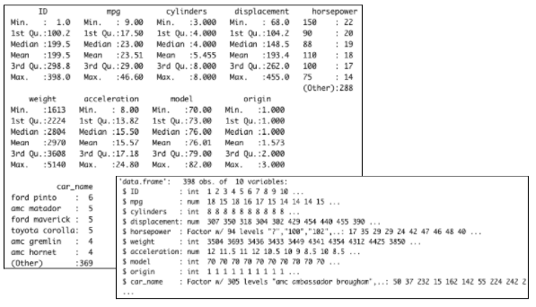From the statistics and summary presented above I am personally interested in focusing on the ‘mpg’ which stands for miles per gallon and the weight of the car. As we can see the miles per gallon for a car is averaged at 23 while weight is at 2804 pounds. It can be assumed that the relationship between the two variables is that 1 mile per gallon of fuel is used up for every 121 pounds the car carries. This is interesting as cars developed from Japan knew this and therefore begin researching lighter less powerful cars that provide better fuel mileage and satisfaction for the consumer. After this discovery I then moved on to focus on these two variables to see if there is any correlation between the two before developing my research question.
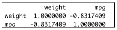As we can see there is definitely a negative correlation between the two variables over 80%. This would mean that the lighter the car is the more fuel efficient the car is. From this we can hypothesize that the Japanese car industry's rise to dominance is due to the fact they began to produce lighter cars with less cylinders therefore reducing the car’s weight significantly and increasing fuel efficiency greatly.
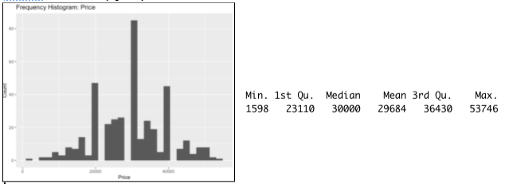Additionally, we were also curious about the price, as it is a major contributor to the popularity of any given car. As we can see from the histogram below the average price for a car during that time was around $30,000. The normal distribution is relatively smooth excluding the few spikes at $20,000 and $40,000. The only significant price with our research is that cheaper cars were usually produced by Japan therefore stating that lighter cars could presumably cost less which shot them up in terms of popularity.
Data Cleaning and Preparation
Based on the initial exploration of the data listed above I noticed a few variable mistakes that need to be addressed. Some of the variables that were imported from the original data set were not what I wanted therefore I changed some of them through Rstudio. For example, the ‘horsepower’ variable was imported as a factor, where it should have been a continuous variable instead. Additionally, the ‘model (year)’ variable was imported as an integer instead of a categorical variable so therefore I changed that as well. For the next part, the ‘origin’ variable has to be changed into a descriptive categorical variable because each number indicates the origin for each model of car. 1 being cars manufactured from the US, while 2 indicates European cars and 3 indicates a Japanese manufactured car.
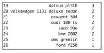Presentation of the Three Analysis
The four distinct areas that this study will be focusing on revolves around these questions:
- How the weight of a car can affect its fuel efficiency?
- How do different regions perform in terms of fuel efficiency for the cars they produce?
- How did prices fluctuate throughout the years of production?
- When did the USA change their stance on producing heavy and powerful cars?
My predictions for these areas of research are linked to my prior background reading on this topic. I believe that a car's weight does indeed have an effect on fuel efficiency in each car model. Additionally, from my knowledge regarding this topic, it is known that the USA were dominant post world war 2 in terms of producing cars that were powerful on the road however consuming a lot of fuel. These cars were known as gas guzzlers. Therefore I hypothesize that fuel efficiency in the USA will be far worse compared to Europe and Japan. Moving on, it can be hypothesized that prices will increase throughout the years due to steady inflation as economies were starting to pick up after the great depression. Finally, I believe that the USA began to change their stance towards producing powerful gas guzzlers, and instead started building more light and efficient cars in order to stay competitive in the car industry against Japan and Europe.
How the weight of a car can affect its fuel efficiency?
In order to answer this question I will have to plot a scatter graph using the ggplot library in order to see how weight affects the overall fuel consumption of a car. A scatter plot will allow us to visualize how the weight affects MPG via a best fit line that will be plotted on the diagram. As we can see from this diagram the line is inversely correlated meaning as weight decreases fuel efficiency would increase.
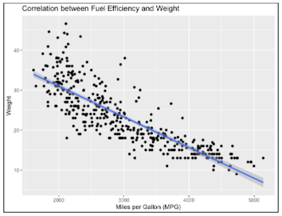Following this discovery, we already know that weight is correlated to fuel efficiency. Therefore, I am interested to see the average weight of the cars produced in their given origin. This would allow me to visualize the difference in weights for each region and have a deeper understanding on why Japan began to dominate the car industry during the 1970s to 80s.
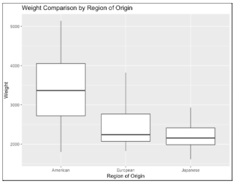As predicted we are able to visualize that the weight of American produced cars were way heavier compared to its counterparts in Europe and Japan. This was probably one of the reasons the public opinion towards American cars deteriorated because these gas guzzlers were costing a whole lot more in gas compared to Japanese and European cars. On top of that, these gas guzzlers were very unpopular with environmentalists as they produced much more carbon monoxide which was harmful to the environment. It can be believed that this is why market share shifted from Americans being dominant in the car industry to the Japanese being the most dominant.
How do different regions perform in terms of fuel efficiency for the cars they produce?
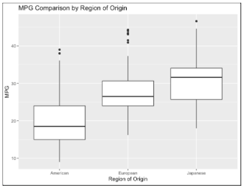As we can see from this rough overview of the average fuel efficiency of cars produced by each given region, we can see a trend in why American produced cars are less in demand as time passes. From this boxplot diagram we can visualize that cars produced in the USA were far less fuel savvy compared to cars produced in Europe or Japan. The American car models were not even close to their competitors in terms of fuel efficiency.
The MPG provided from the data set shows that American produced cars during this era had significantly lower fuel efficiency compared to cars made from Europe and Japan. From prior research, we are aware that weight has an inverse relationship with the fuel efficiency of a car therefore we can presume that the fact that Americans usually produce more powerful and heavy cars is true.
How did prices fluctuate throughout the years of production?
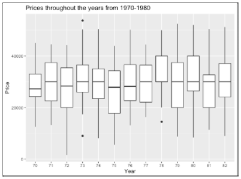 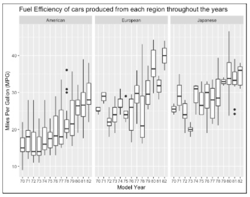The diagram plotted above is a collection of prices for cars throughout the 1970s up till the 1980s. From this diagram we can tell that the fluctuation of prices did not align with our hypothesis. As a matter of fact, prices remained stable at around $30,000. This could be due to high competition in the car industry therefore leading to each car company not willing to increase its prices in order to maintain market share.
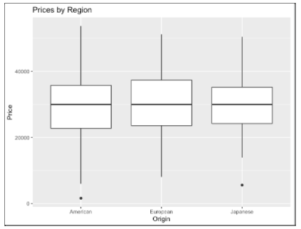After observing the prices over time I was curious to see whether or not my prediction of countries not raising prices due to a highly competitive market was true. As seen in the box plot diagram above, my hypothesis was true and we can see that the prices for cars from these 3 regions were relatively similar. We can conclude that due to high competition during this time prices remained fairly stable in order to maintain their market share.
When did the USA change their stance on producing heavy and powerful cars?
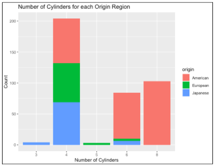Initially a simple stacked bar chart was plotted in order to observe how many cylinders were contained in each car model given their origin. From this graph we can observe that the American car producers are the only ones that are producing cars with 8 cylinders. Whereas, European and Japanese car makers focused on the production of 4 cylinder cars.
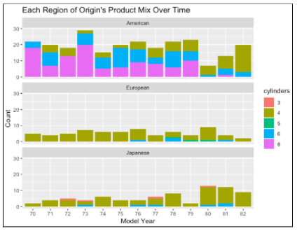In order to answer this question I chose to use a stacked bar chart to observe how many car cylinders were included in car models throughout the years. As we can see, American cars began to switch from 8 cylinder cars with high power to lighter more efficient 4 cylinder cars like their competition from Europe and Japan. The decrease in cylinders led to the USA producing less heavy and powerful cars over the more fuel efficient counterparts.
Lessons Learned
In conclusion, the research has shown that weight does indeed affect the fuel efficiency for a car. Additionally, the reason for the Japanese rise to dominance in the car industry during the 1980s was due to their more fuel efficient cars which were favored by the general public. Lastly, the USA began to move away from producing heavy and powerful cars to stay competitive in the car industry as demands for low fuel consumption vehicles peaked during the 1980s. This research on car evolution throughout the 1970s to 80s was insightful and helped me get a better understanding on how car manufacturers shifted their design to the consumer needs.
Through this study I learnt that the weight of a car will heavily affect the fuel efficiency of that particular vehicle therefore car designers had to design lighter cars as time passes due to demand for more fuel efficient cars. There were some mistakes made during the import stages of the analysis. The variables imported into RStudio were not matching the right variable type I desired, therefore this led to many problems in terms of graphing and plotting. An example of this was when I did not explicitly transform the origin variable into categorical data which led to graphs that were not up to my expectations. If I had to do things differently again I would check each variable closely before jumping straight into my analysis as it would have saved me a lot of time and hassle in the visualization part of the research. I learnt that the most important part of any analysis is the initial data exploration which can lead to many insightful discoveries. As for improvements, I hoped that I could have a better grasp on RStudio which could provide me with the skills to develop more meaningful and aesthetically pleasing graphs for my audience. The current graphs do answer my research questions however I believe that with a better grasp in ‘ggplot’ for example would allow me to present my findings in a much more professional manner.